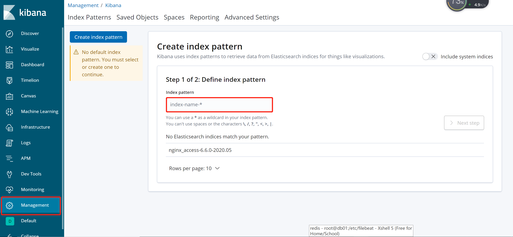
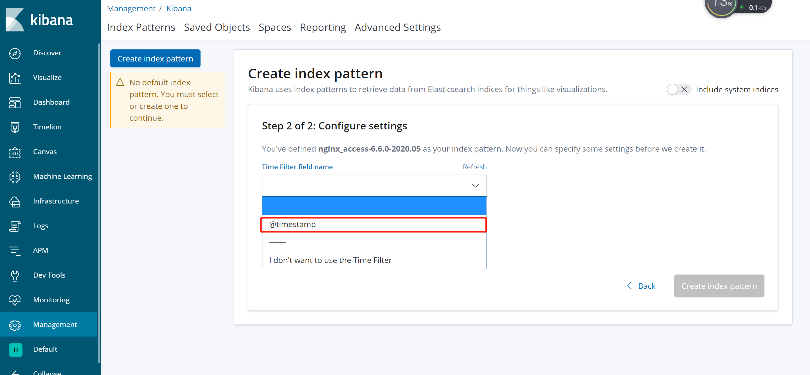
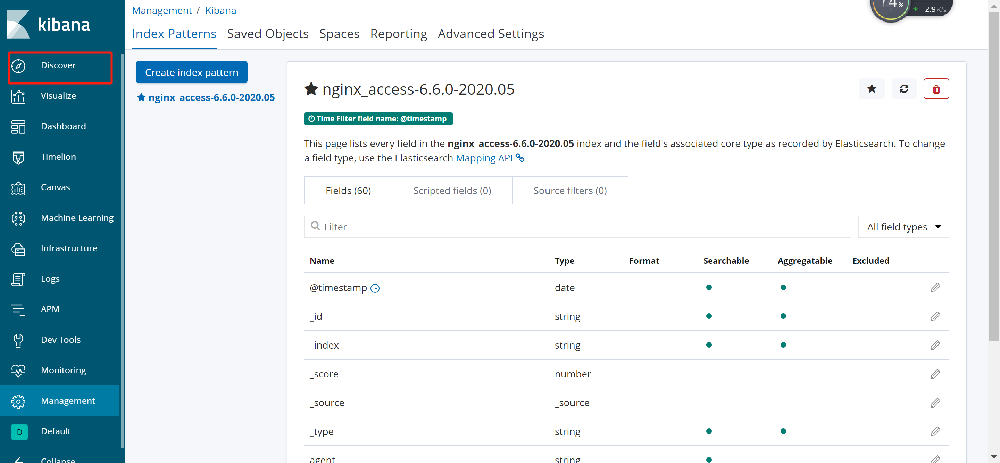
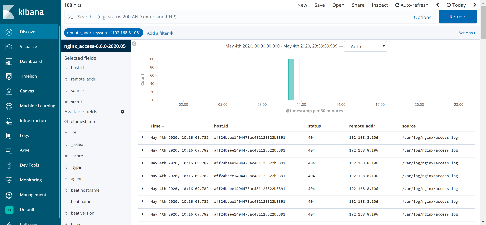

ELK-nginx

环境准备
# 192.168.8.106
ES # 存储日志
Kibana # 画图展示
nginx # nginx
# 192.168.8.105
nginx
filebeat 采集日志
# 设置时间同步
ansible docker -m yum -a "name=ntpdate state=installed"
# 被监控主机安装
yum install httpd-tools -y
# 产生一些日志
ab -c 100 -n 100 192.168.8.105/
软件下载安装
下载
wget https://artifacts.elastic.co/downloads/elasticsearch/elasticsearch-6.6.0.rpm
wget https://artifacts.elastic.co/downloads/kibana/kibana-6.6.0-x86_64.rpm
wget https://artifacts.elastic.co/downloads/logstash/logstash-6.6.0.rpm
wget https://artifacts.elastic.co/downloads/beats/filebeat/filebeat-6.6.0-x86_64.rpm
安装
kibana
# 192.168.8.106
rpm -ivh kibana-6.6.0-x86_64.rpm
rpm -qc kibana
/etc/kibana/kibana.yml
# 配置文件
grep "^[a-Z]" /etc/kibana/kibana.yml
server.port: 5601
server.host: "192.168.8.106"
server.name: "db01"
elasticsearch.hosts: ["http://192.168.8.106:9200"]
kibana.index: ".kibana"
# 启动
systemctl start kibana
systemctl enble kibana
filebeat
# 192.168.8.106/105
rpm -ivh filebeat-6.6.0-x86_64.rpm
rpm -qc filebeat
/etc/filebeat/filebeat.yml
# 配置文件
egrep -v "#|^$" /etc/filebeat/filebeat.yml
filebeat.inputs:
- type: log
enabled: true
paths:
- /var/log/nginx/access.log
filebeat.config.modules:
path: ${path.config}/modules.d/*.yml
reload.enabled: false
setup.template.settings:
index.number_of_shards: 3
setup.kibana:
output.elasticsearch:
hosts: ["192.168.8.106:9200"]
processors:
- add_host_metadata: ~
- add_cloud_metadata: ~
# 重启filebeat
systemctl start filebeat
systemctl enble filebeat
ES
node.name: node-1
path.data: /data/elasticsearch
path.logs: /var/log/elasticsearch
network.host: 192.168.8.106,127.0.0.1
http.port: 9200
Kibana展示




ELK-Nginx-json
将Nginx改为json格式
配置ngxin的日志显示json
log_format json '{ "time_local": "$time_local", '
'"remote_addr": "$remote_addr", '
'"referer": "$http_referer", '
'"request": "$request", '
'"status": $status, '
'"bytes": $body_bytes_sent, '
'"agent": "$http_user_agent", '
'"x_forwarded": "$http_x_forwarded_for", '
'"up_addr": "$upstream_addr",'
'"up_host": "$upstream_http_host",'
'"upstream_time": "$upstream_response_time",'
'"request_time": "$request_time"'
' }';
修改filebeat的配置文件
filebeat.inputs:
- type: log
enabled: true
paths:
- /var/log/nginx/access.log
json.keys_under_root: true ## 增加该两条参数
json.overwrite_keys: true ## 增加上述的两条参数
filebeat.config.modules:
path: ${path.config}/modules.d/*.yml
reload.enabled: false
setup.template.settings:
index.number_of_shards: 3
setup.kibana:
output.elasticsearch:
hosts: ["192.168.8.106:9200"]
index: "nginx_access-%{[beat.version]}-%{+yyyy.MM}" # 配置自己的模板索引注意bean
setup.template.name: "nginx"
setup.template.pattern: "nginx_*"
setup.template.enabled: false # 关闭官方模板
setup.template.overwrite: true
同时监控nginx错误日志
修改filebeat.yml的配置文件
filebeat.inputs:
- type: log
enabled: true
paths:
- /var/log/nginx/access.log
json.keys_under_root: true
json.overwrite_keys: true
- type: log
enabled: true
paths:
- /var/log/nginx/error.log
json.keys_under_root: true
json.overwrite_keys: true
filebeat.config.modules:
path: ${path.config}/modules.d/*.yml
reload.enabled: false
setup.template.settings:
index.number_of_shards: 3
setup.kibana:
output.elasticsearch:
hosts: ["192.168.8.106:9200"]
index: "nginx_access-%{[beat.version]}-%{+yyyy.MM}"
setup.template.name: "nginx"
setup.template.pattern: "nginx_*"
setup.template.enabled: false
etup.template.overwrite: true
#####
vim 小技巧 ：2,7t8 将2行到第7行复制到第8行 m8 移动到第8行